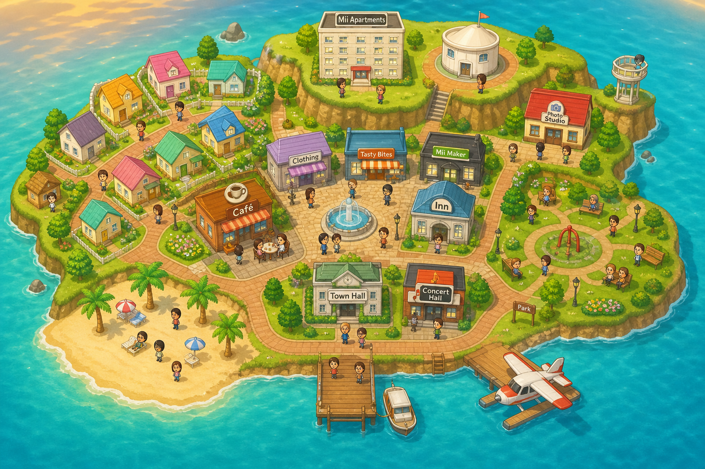
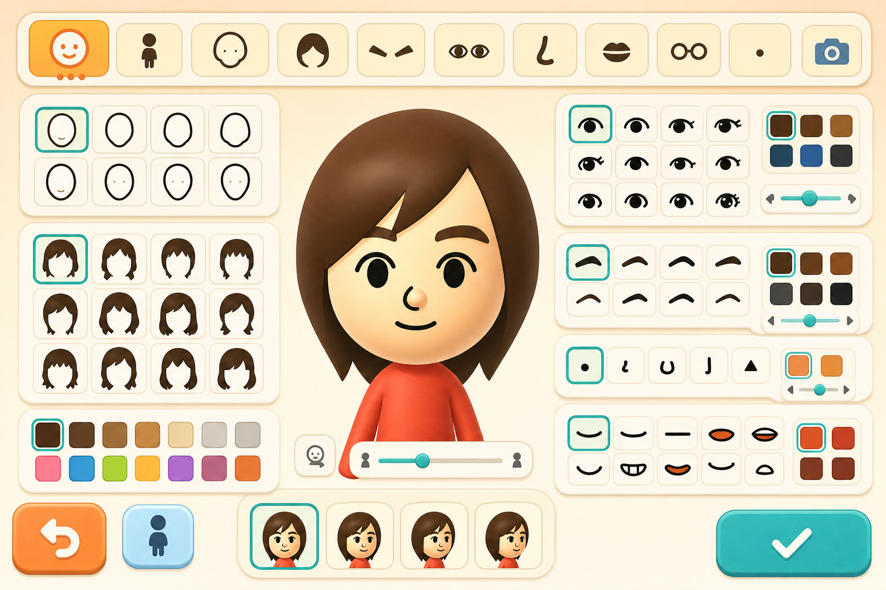
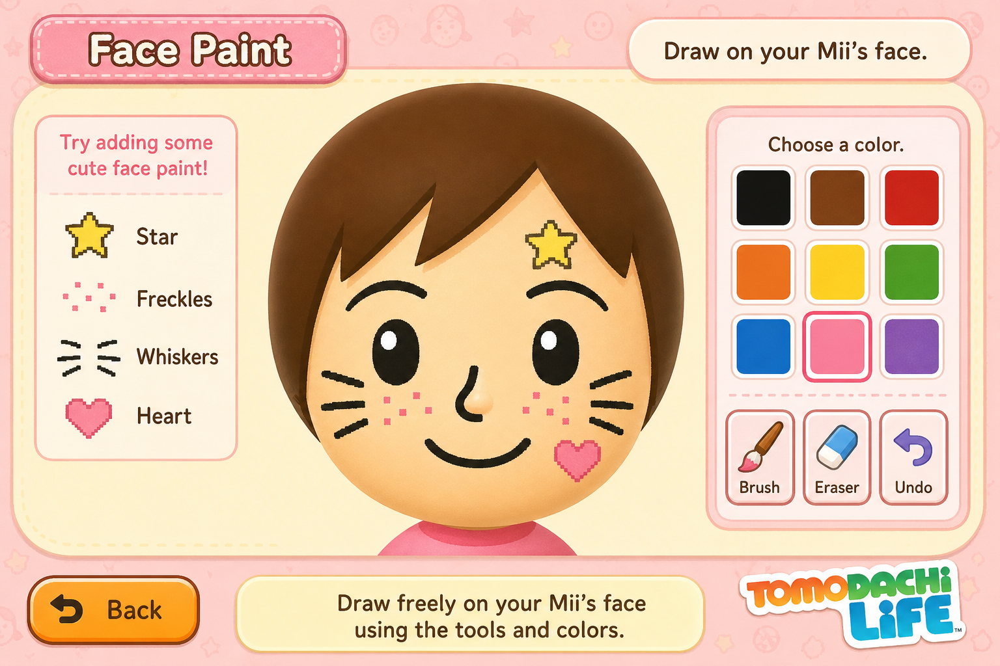
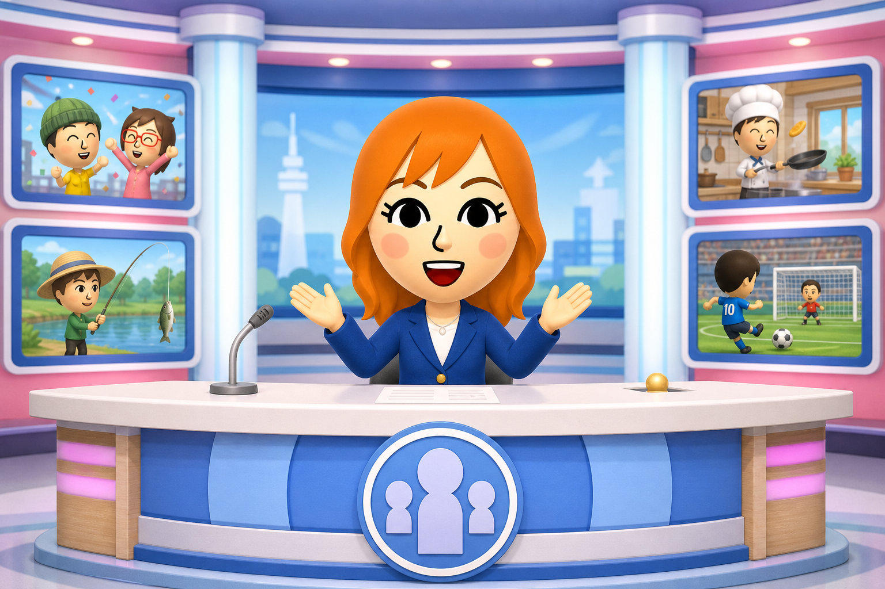

值得被照顾
玩家投放的不是控制欲，而是家长般的目光。
🎮 Nintendo Switch · 2026.4.16 发售
一座小岛、一群 Mii，
以及 9 年时间打磨出的「随心所欲」
今天会聊到
不直接控制 Mii，而是用尽办法去理解和照顾它们——下面四章我们会沿着这个内核展开。
01
从 DS 到 Switch，
16 年的系列血脉
02
不是分身，
是「拥有人格的生物」
03
玩家创造一切，
Mii 决定怎么用
04
6–7 年开发，
9 年份的圈内梗
01
第一部分
朋友收集系列 16 年的进化与等待。
一个被任天堂自己称为「究极小圈子的圈内梗软体」的奇特血脉。
16 年血脉
2009
Nintendo DS
Tomodachi
Collection
系列原点
2013
Nintendo 3DS
Tomodachi Life
加入育儿、首次出海
2016
iOS / Android
Miitomo
2018 终止服务
2016
3DS · 移植 Switch
Miitopia
Mii 的 RPG 冒险
2026
Switch / Switch 2
朋友收集
梦想生活
脱胎换骨重制
为什么是 2017 年起步
制作人坂本贺勇与监督高桥反复玩前作，最终发出感叹：「明明想让 Mii 们做更多事，可是已经没有新东西可给他们了……」开发由此拉开序幕。
为什么是 Switch
3DS 因机能限制只能用「公寓大楼」承载 Mii。Switch 终于支持大量 Mii 在整座岛上自由走动，UGC 内容彼此咬合，演化出意想不到的剧情。
从一声叹息开始
「明明想让他们做更多事，可是我已经没有新东西可以让这些 Mii 做了……」
制作人 坂本贺勇 · 把前作《Tomodachi Life》玩了好几年之后
2017
开发起点
《Miitomo》之后
6–7 年
实际开发周期
原计划仅 1.5 年
10+ 年
前作至今的间隔
玩家苦等多年
不是续作，是重生
高桥监督的开发宣言：保留系列灵魂，但每一行代码、每一个部件，全部重做。
命题一
3DS 因机能限制只能用「公寓大楼」承载 Mii。Switch 终于能让大量 Mii 同时在岛上活动——行动空间的扩张，是一切设计自由度的起点。
命题二
系列定位是「究极小圈子的圈内梗软体」。沿用旧路只能比道具数量。UGC 让玩家自己制造新梗，乐趣无限扩展。
「Tomodachi Collection 的玩家不只是把 Mii 当成自己的分身，而是会对 Mii 这个『生物』投放情感。」
蔭山 大介（美术总监）
02
第二部分
从「定义 Mii」到「实现 Mii」，
看团队如何把一个虚拟角色，设计成值得玩家持续牵挂的存在。
整个团队反复讨论的一句话
Mii 不是头像，不是分身，而是「值得被照顾的、像小孩般纯真的存在」。所有设计取舍，都围绕这一句展开。
玩家投放的不是控制欲，而是家长般的目光。
不机智、不毒舌，偶尔说出让人惊讶的大实话。
Mii 抛梗，吐槽留给玩家自己。
「让人会忍不住想要照顾、值得爱护的对象——我们希望 Mii 依然是这样的存在（笑）。」
大西（程式总监）
性能提升 ≠ 视觉升级
「不能只因为『解析度提升了』就草率改变 Mii 的设计。这些 Mii 里，装满了不同玩家深厚的情感。」
蔭山 大介（美术总监）· 接下来三页会拆开讲
形状不变，但每一个部件都重画
不改变「Mii 之所以是 Mii」的核心特征，但把每一个部件的结构与设计都从头审视一遍。
🔒 保留
· 脸部部件的形状与位置
· 手脚的圆润形状
· 整体身体比例
🎨 更新
· 素朴 + 动画风格的卡通调性
· 让 Mii 间的戏剧场景更易投入
· 现代屏幕下不显得过时
🎁 一个意外的发现
验证过程中团队发现：这个「卡通风格」与坂本贺勇从初代就想呈现的形象不谋而合。初代盒装上的 Mii 与当年游戏内画风并不相同，反而更接近本作。
关于「原声」的反向调音
峰岸音效总监在为 Mii 做声音时，最难的事不是让它更真实，而是知道在哪里收手。
🎤 新的语音合成引擎
Switch 时代的引擎，理论上 Mii 可以发出非常自然、接近真人的声音。
⚠️ 直接输出 → 「这不太像 Mii」
🛠 反向调音的工艺
团队特意将真人感反向加工，让 Mii 的声音同时具备「时代感的清晰」与「Tomodachi 系列的卡通腔调」。
✅ 一听就知道：「啊，是 Mii。」
「希望同时保留过去 Tomodachi Collection 的感觉，又能适度地配合时代进行更新。要找到这个恰到好处的平衡点，并不容易。」
峰岸 透（音效总监）
动画师与设计师的反复商讨
如果动作太流畅、太帅气，就不像 Mii。所以团队选择「反着设计」——动画师本能想加的过渡，全部砍掉。
❌ 删掉
让动作看起来圆润、流畅的过渡帧，团队刻意省略。动作有点僵硬、像旧动画——但这正是 Mii 的味道。
✅ 加强
跳跃、惊吓、跑步姿势都刻意夸大：关键帧 over，过渡帧 under。记忆点反而更强。
「我们经常与动画工作人员商量，像是『这会否太写实了』之类的问题。」
蔭山 大介（美术总监）
保持边界，为惊喜留出空间
不让玩家直接指挥 Mii——这是核心原则。玩家能做的，都是「轻轻种下种子」的动作。
「Mii 听从指示就没意思了。抓起并放下，但之后做什么，交给 Mii 自己决定。」
上野 隆臣（程式总监）
① 抓起
他俩会聊起来吗？打架吗？不知道。
—— 留给意外
② 送礼
Mii 收到后自己决定怎么用。
—— 留给个性
③ 教话
这句话会在意想不到的时刻冒出来。
—— 留给惊喜
⚠️ 早期方案曾尝试「纸杯传声筒」让玩家给 Mii 提建议（4 选 1），被高桥否决：「这样意外的惊喜就消失了。」
玩家唯一的"主动权"
玩家可以抓起 Mii，搬到岛上任意角落。但这就是玩家能做的全部。
从家里、街上、海边⋯把 Mii 拎起来
放到任意位置：另一个 Mii 旁、店铺、房间
剩下的全部交给 Mii——他们决定要不要互动

游戏内核心动作：玩家可以抓起 Mii，搬到任何位置
送什么是你的，怎么用是 Mii 的
玩家可以送 Mii 食物、衣服、书、游戏、宠物，甚至「微个性」——但反应、用法，由 Mii 自己的人格决定。
🍔 同一个汉堡，送给 3 只不同个性的 Mii →
🍴 大食量 个性
满意度直冲顶 · 立刻吃光 · 还想加餐
😐 普通 个性
满意度小幅上升 · 慢慢吃完 · 没特别反应
🙅 挑食 个性
皱眉 · 悄悄放下 · 满意度反而下降
「玩家可以将各种东西送给 Mii，但要怎么运用，则取决于 Mii——并享受 Mii 的各种不同反应。」
高桥 龙太郎（总监督）
种下一句话，不写剧本
📖 真实例子 · 来自访谈
高桥说：Mii 问「最近有什么新闻？」我顺手回答「治好了四十肩」。
几天后我都已经忘了，看见 Mii 们凑在一起聊天，靠近一听——居然热烈讨论起『治好了四十肩』这件事。
📍 几天后，岛上 · 公园长椅
Mii A你听说了吗？听说他治好了四十肩！
Mii B哦哦哦，那真是太好了！
Mii C最近天气也越来越暖和了呢。
Mii A说回那个四十肩⋯⋯
💭 玩家：「这是什么对话？！」 ← 圈内梗诞生
设计原理：玩家输入 → 进入岛屿专属词库 → Mii 按自己的人格、当下场景随机引用。
03
第三部分
「把开发团队准备的东西，与玩家自行制作的东西结合起来，乐趣就会无限扩大。」
在拆解机制之前⋯

玩家用 UGC 工具搭出的偶像团体、主题岛屿、跨服恋爱、自制便当⋯⋯
🎤 偶像团体
🏝️ 主题岛屿
💌 跨服恋爱
🍱 自制便当
这些都是玩家用 UGC 机制做出来的内容 —— 接下来几页，我们来拆解他们如何做到。
玩家创造一切，Mii 决定怎么用
面容 / 肤色 / 涂鸦 / 声音 / 性别 / 取向
16 主性格 + 可送的小习惯
食物 / 衣服 / 书 / 游戏 / 宠物
地砖 / 建筑外观 / 路径
「Tomodachi Collection 的概念是『究极小圈子的圈内梗软体』。能让玩家自由制作喜欢东西的 UGC，与这款游戏非常契合。」
高桥 龙太郎（总监督）
① 面容
✨ 更细的部件：睫毛、双眼皮、嘴巴可调角度
🎨 头发双色：副色设定能做双色发型
🌈 颜色全开：肤色 / 部件色不限——能做动物、外星人
🏳️🌈 无限制关系：性别 / 恋爱对象 / 婚礼服自由

Mii Maker：脸型、五官、发型、颜色全部可调
② 脸部彩绘 · 本作最受好评的功能

Face Paint：可在 Mii 脸上直接手绘任意图案
不只是选择部件——还能在 Mii 脸上直接画。胡子、雀斑、纹身、彩妆、动物特征……
😻 真实彩蛋
团队对 Mii 婴儿做了「特征遗传系统」调整。测试时一只画了猫脸的 Mii 真的生出了猫脸宝宝——把开发成员都吓了一跳。
自由度太高 = 新手会怕
为不擅长制作 Mii 的玩家准备的全新功能——回答问题，「啪」的一声生成一只 Mii。
头发长还是短？ 短
脸型偏圆还是偏方？ 偏圆
眼睛细长还是大？ 大
⋯⋯
🎉 「啪！」 生成一只 Mii
💡 设计哲学：就算长得不像，吐槽「这是谁啊！」也能成为新的「圈内梗」
UGC 工具能做到什么程度

从普通人类到动物、外星人、机器人——只要你想得到
「除了本人、家人、朋友等真实人物之外，也会有玩家想制作原创角色。因此我们尽可能让玩家透过各种方式制作出任何样子的 Mii。」
— 高桥 龙太郎
③ 性格 × 微个性
基础层 · 自初代延续
决定 Mii 的对话风格、行动倾向。覆盖大多数人格类型。
温柔活泼认真冷静… 共 16 种
本作新增 · 一大发明
无法塞进 16 种主性格里的细节，做成可送给 Mii 的礼物。
独特步姿大胃王小鸟胃说话很大声睡相差浮在空中⚠️ 放屁
「『微个性』可以说是本作的一大发明。你自己决定加什么，才能更像本人——而那就是『圈内梗』的起点。」
高桥 龙太郎（总监督）
真实故事
一个让团队意见两极分裂的微个性。
😆
一派开发者支持加入
😣
另一派觉得拉低品味
🎯 最终方案
喜欢的人送给 Mii，不喜欢的人不送就好。音效也反复重录——曾经做出过「砰！」一声爆炸式的版本（全员爆笑）。
⑤ 万物皆可手绘

Palette House Workshop：84 色调色板，万物皆可手绘
🍔 食物
👕 衣服
📚 书籍
🎮 游戏
🐱 宠物
🪑 家具
🧱 地砖
🏠 建筑外观
💡 不会画？可以用文字、贴 Mii 脸照、套范本，甚至完全不用 UGC 也能享受游戏。
「能送给 Mii 最大的东西，就是『岛』本身。」
高桥 龙太郎
能送给 Mii 最大的礼物
从地砖到建筑外观——开发组连办公室都搬进了游戏
🏢 团队的「本社开发岛」
团队成员用造岛功能重现了自己的办公室，让开发人员的 Mii 住在里面。每张桌子都是一只 Mii 的家——但大家都不坐桌前，到处聊天躺着（笑）。
本地化不是翻译
为了让玩家相信「这就是我生活的小岛」，团队连物价和早餐都按地区改了。
🍙 食物
· 🇯🇵 日本：梅干、茶泡饭
· 🇺🇸 美国：S'more 棉花糖
· 后期所有食物都能买到
💰 货币
根据地区显示日元 / 美元 / 欧元，价格也跟着调整。避免「突然走进陌生世界」的疏离感。
🎵 BGM
峰岸单独用钢琴弹奏初代主题曲后发现：
这其实是带爵士风格的复杂乐曲。松散是表面，复杂是底色。
「表面看起来略显憨拙、廉价，但内里其实有更复杂的东西。这或许不只适用于音乐，也适用于整个 Tomodachi Collection。」
峰岸 透（音效总监）
04
第四部分
从 Debug 工具到核心玩法，
从公告板到 Mii 新闻，
还有藏在访谈里 9 年份的圈内梗。
① 抓起的交互
📖 设计小故事
岛屿规模做大后，验证用的 Mii 容易离得太远——程式组加入了「强制搬运」当作 Debug 工具。
结果在测试过程中，开发者忍不住说出来：
「希望这个 Mii 和那个 Mii 能一起玩。」
—— 这个 Debug 功能，就这样成为了正式玩法。
💡 启示：团队自己测试时冒出来的「我也想试试」，往往就是产品最该保留的核心动词。
最终成为整作核心交互的「抓起」
② 构思公告板
「让所有工作人员都能自由写下自己的想法。当有人写下有趣的想法时，不同岗位的人就会记下，并把它实现。」
蔭山 大介（美术总监）
不分岗位 / 资历，都能贴到公告板上
「由我来统筹负责！」主动推动落地
把热情调整到现实可行的程度
③ Mii 新闻 · 差点被砍的功能

Mii 新闻：让岛上发生的事变成每日播报
⚡ 真实经过
原计划因为时间不够要砍掉 Mii 新闻。一位年轻设计师站出来力争：
「没有 Mii 新闻就不像是 Tomodachi Collection！」
她去找各组商量调整方案，把功能调整到现实可行的程度实装。
「原本以玩家身份享受作品的人，如今成为了开发者，亲手将自身的回忆转化为具体的成果。」
高桥 龙太郎
④ 9 年份梗的彩蛋
🪴 Pikmin 当宠物
开发团队在 UGC 自定义宠物里亲手做了 Pikmin，让 Mii 一起散步玩耍。「我们做了很多这种内部的圈内梗。」 — 高桥
💳 高桥的员工证
UGC 道具中真的有「高桥龙太郎的员工证」与「薪水袋」。开发者自己玩得很嗨，希望玩家也能制造类似的圈内梗。
💨 放屁的音效
放屁音效重录过非常多次。曾做出过爆炸式的「砰！」——「这个太写实了」之类的意见层出不穷。
🏢 本社开发岛
团队成员重现了自己的任天堂办公室，让开发人员的 Mii 住在里面。每张桌子都是一只 Mii 的家。
如果只能带走 3 件事
01
硬件、引擎、画面可以升级——但是否升级取决于你的设计对象「应当是什么样子」。这个共识比任何 KPI 都重要。
02
玩家完全指挥 Mii，乐趣就消失。类比到产品工作：不要替用户做所有决定。给系统留出「自然反应」的空间，故事才会发生。
03
玩家创造一切，但 Mii 决定怎么用——这两个动作之间的张力，才是 UGC 真正的引擎。设计 UGC，先设计「使用 UGC 的对象」。
欢迎一起聊聊：你最想做成 Mii 的那个朋友，
会拥有什么样的「微个性」？
资料来源 · Nintendo 官方开发者访谈 vol.21（Part 1 / 2 / 3）
Nintendo Life · Wccftech · Final Weapon · Eneba · IGN · GamesRadar+ 等评测
Wikipedia (Tomodachi Life: Living the Dream / Tomodachi Collection) · MiiWiki